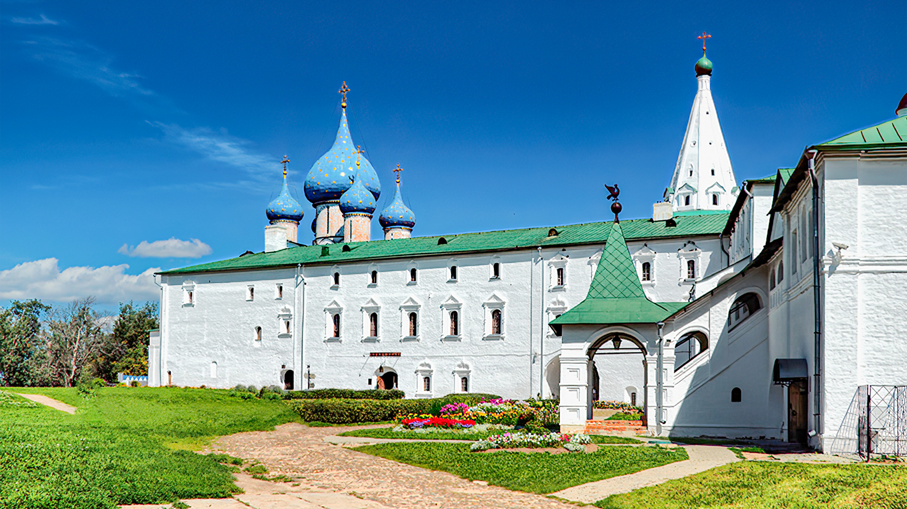

Успенский собор
Владимир
Пожарная каланча
Кострома
Спасо-Преображенский собор
Переславль Залесский
Успенский собор
Ростов
Троицкий собор
Сергиев Посад

Ансамбль Рождественского
собора и Архиерейского дома
собора и Архиерейского дома
Суздаль
Церковь Царевича Димитрия
«на крови»
«на крови»
Углич
Палата дворца удельных
князей
князей
Углич
Церковь Ильи Пророка
Ярославль
Успенский собор
г. Владимир
Объект Всемирного культурного наследия ЮНЕСКО. Один из старейших русских храмов, ставший
свидетелем
важнейших исторических событий. Святыня Православной Церкви, некрополь великих князей и духовных
владык,
редчайшее сочетание уникальной архитектуры, настенных росписей и декоративно-прикладного
искусства
XII–XIX
вв. Единственный в России храм, где на большой площади (более 300 кв.м) сохранились фрески
прославленного
иконописца Андрея Рублёва.
Древнейший собор Владимира был построен в 1158 — 1160 годы князем Андреем Боголюбским. Высокое назначение собора отразилось в дерзкой высоте — более тридцати двух метров, выше двадцатидевятиметровой киевской Софии. Успенский собор был долгое время главным храмом всей Русской Земли.
В соборе сохранился древнейший русский некрополь — более 40 захоронений владимирского великокняжеского рода и владимирских архиереев. Здесь покоятся князья Андрей Боголюбский, Всеволод Большое Гнездо, его сын Георгий Всеволодович. В соборе находится символическая гробница с частичкой мощей Александра Невского.
Успенский собор сегодня — это и музей, и действующий храм.
Древнейший собор Владимира был построен в 1158 — 1160 годы князем Андреем Боголюбским. Высокое назначение собора отразилось в дерзкой высоте — более тридцати двух метров, выше двадцатидевятиметровой киевской Софии. Успенский собор был долгое время главным храмом всей Русской Земли.
В соборе сохранился древнейший русский некрополь — более 40 захоронений владимирского великокняжеского рода и владимирских архиереев. Здесь покоятся князья Андрей Боголюбский, Всеволод Большое Гнездо, его сын Георгий Всеволодович. В соборе находится символическая гробница с частичкой мощей Александра Невского.
Успенский собор сегодня — это и музей, и действующий храм.
Пожарная каланча
г. Кострома
Пожарная каланча – выдающийся памятник архитектуры эпохи классицизма в Костроме. Построена в
1824-1827 гг.
по проекту архитектора П.И.Фурсова.
Пожарная каланча расположена на центральной – Сусанинской площади Костромы, служит главным её украшением и представляет собой античное здание с шестью портиками. В нем были помещения для пожарных депо, жилые комнаты для служащих, «гаражи» для машин и бочек с водой, а наверху, на смотровой башне постоянно дежурил караульный, который с высоты 35 м над городом следил, не горит ли чего. Там же располагался колокол, в который звонил караульный, если видел где-то очаг возгорания.
Сегодня пожарная каланча в Костроме признана национальным достоянием и охраняется ЮНЕСКО, а в 2005 г. здесь открылся музей пожарного дела.
Пожарная каланча расположена на центральной – Сусанинской площади Костромы, служит главным её украшением и представляет собой античное здание с шестью портиками. В нем были помещения для пожарных депо, жилые комнаты для служащих, «гаражи» для машин и бочек с водой, а наверху, на смотровой башне постоянно дежурил караульный, который с высоты 35 м над городом следил, не горит ли чего. Там же располагался колокол, в который звонил караульный, если видел где-то очаг возгорания.
Сегодня пожарная каланча в Костроме признана национальным достоянием и охраняется ЮНЕСКО, а в 2005 г. здесь открылся музей пожарного дела.
Спасо-Преображенский собор
г. Переславль-Залесский
Спасо-Преображенский собор (1152-1157) – самый древний полностью сохранившийся памятник
белокаменного
зодчества Северо-Восточной Руси. С собором связаны такие события, как крещение князя Александра
Невского и
рукоположение в игумены Преподобного Сергия Радонежского, суд над Митрополитом московским
Петром.
Уникальный по лаконичности форм собор идеально подходит для макетирования. Тактильная модель позволяет увидеть и почувствовать особенности форм памятника: трехчастное деление стен, образованное ступенчатыми углублениями на южном, западном и северном фасадах и примыкающими с востока полукруглыми апсидами; уступ на уровне середины высоты стен; симметрию западного и восточного фасадов в противоположность таким разным по высоте полукруглым завершениям стен северного и южного фасадов.
Ежегодный туристический поток в Переславль, главной достопримечательностью которого является Спасо-Преображенский собор, достигает полумиллиона человек.
Уникальный по лаконичности форм собор идеально подходит для макетирования. Тактильная модель позволяет увидеть и почувствовать особенности форм памятника: трехчастное деление стен, образованное ступенчатыми углублениями на южном, западном и северном фасадах и примыкающими с востока полукруглыми апсидами; уступ на уровне середины высоты стен; симметрию западного и восточного фасадов в противоположность таким разным по высоте полукруглым завершениям стен северного и южного фасадов.
Ежегодный туристический поток в Переславль, главной достопримечательностью которого является Спасо-Преображенский собор, достигает полумиллиона человек.
Успенский собор
г. Ростов
Ростов самый ранний центр Православия на территории современной России: в 991 году святителем
Феодором (†
1023, в числе священнослужителей-греков, посланных Константинопольским патриархом крестить Русь)
здесь был
построен Успенский собор.
Ныне существующее здание собора, построенное в 1508–1515 годах, — четвертое по счету на этом месте, и каждое из этих зданий имело свою историю, в которой отразились деяния святых подвижников Древней Руси и ее великих исторических деятелей.
Рядом с Успенским собором в 1682-1688 годах митрополит Иона построил соборную звонницу. Самый большой колокол звонницы, «Сысой», весит две тысячи пудов (32 тонны), назван в честь отца владыки Ионы. Второй по величине колокол «Полиелейный» (16 тонн) и третий — колокол «Лебедь» 8 тонн). Всего на соборной звоннице 15 колоколов, из них 13 отлито в XVII веке. Ростовские звоны – уникальное явление церковной музыки. По мощи, богатству и тонкости звучания — это, бесспорно, одна из вершин духовной культуры, достигнутой многовековой традицией Церкви.
Каждый колокольный звон имеет свое название. Чаще всего звон получал имя того владыки, в правление которого был создан.
Ныне существующее здание собора, построенное в 1508–1515 годах, — четвертое по счету на этом месте, и каждое из этих зданий имело свою историю, в которой отразились деяния святых подвижников Древней Руси и ее великих исторических деятелей.
Рядом с Успенским собором в 1682-1688 годах митрополит Иона построил соборную звонницу. Самый большой колокол звонницы, «Сысой», весит две тысячи пудов (32 тонны), назван в честь отца владыки Ионы. Второй по величине колокол «Полиелейный» (16 тонн) и третий — колокол «Лебедь» 8 тонн). Всего на соборной звоннице 15 колоколов, из них 13 отлито в XVII веке. Ростовские звоны – уникальное явление церковной музыки. По мощи, богатству и тонкости звучания — это, бесспорно, одна из вершин духовной культуры, достигнутой многовековой традицией Церкви.
Каждый колокольный звон имеет свое название. Чаще всего звон получал имя того владыки, в правление которого был создан.
Троицкий собор
г. Сергиев Посад
Троицкий собор – главный соборный храм и древнейшее из сохранившихся сооружений Троицкого
монастыря,
первое
каменное здание Троице-Сергиевой Лавры. Он был воздвигнут преподобным Никоном в 1422-23 гг. «в
честь
и
похвалу» основателю монастыря, преподобному Сергию Радонежскому (†1392) на месте первой
деревянной
Троицкой
церкви.
Троицкий собор представляет собой небольшой четырехстолпный крестовокупольный храм с одной главой и тремя невысокими апсидами на высоком подклете (часть подклета в настоящее время закрыта культурным слоем). Стены собора сложены из правильных блоков белого камня, их толщина и массивность подчеркивается глубокими перспективными порталами и узкими щелевидными окнами. Плоские широкие лопатки придают фасадам трехчастное деление и имеют значение конструктивных пилястр.
Несмотря на небольшие размеры (высота храма до верха креста равна 30 м) собор создает впечатление величественного и мощного сооружения. Все формы храма просты и компактны – апсиды почти не выступают за пределы основного объема и подняты на одну высоту, килевидные арки (кокошники) едва возвышаются над закомарами фасадов, стены имеют значительный наклон внутрь (до 45 см). Типологически Троицкий собор относится к немногим сохранившимся памятникам раннемосковского зодчества конца XIV – начала XV в., когда сложился образ компактного одноглавого придворно-княжеского храма без притвора.
Троицкий собор представляет собой небольшой четырехстолпный крестовокупольный храм с одной главой и тремя невысокими апсидами на высоком подклете (часть подклета в настоящее время закрыта культурным слоем). Стены собора сложены из правильных блоков белого камня, их толщина и массивность подчеркивается глубокими перспективными порталами и узкими щелевидными окнами. Плоские широкие лопатки придают фасадам трехчастное деление и имеют значение конструктивных пилястр.
Несмотря на небольшие размеры (высота храма до верха креста равна 30 м) собор создает впечатление величественного и мощного сооружения. Все формы храма просты и компактны – апсиды почти не выступают за пределы основного объема и подняты на одну высоту, килевидные арки (кокошники) едва возвышаются над закомарами фасадов, стены имеют значительный наклон внутрь (до 45 см). Типологически Троицкий собор относится к немногим сохранившимся памятникам раннемосковского зодчества конца XIV – начала XV в., когда сложился образ компактного одноглавого придворно-княжеского храма без притвора.
Ансамбль Рождественского собора и Архиерейского дома
г. Суздаль
Объект Всемирного культурного наследия ЮНЕСКО. Одно из старейших и красивейших мест Суздаля,
архитектурный
ансамбль памятников XIII–XVII веков, гармонично вписанный в прекрасный природный ландшафт. Здесь
вы
окунетесь в историю этого славного города, полюбуетесь древними иконами и побываете в главном
парадном
помещении суздальских церковных Владык – Крестовой палате.
Кремль — ядро средневекового города, его древнейшая укрепленная часть. Валы Кремля Суздаля были насыпаны на рубеже X – XI вв., с течением времени они неоднократно видоизменялись. Протяженность вала – 1400 м., замыкали они территорию в 14 га. По гребню вала шли деревянные стены. В цепи стен находились деревянные башни с проездными и пешими воротами Рубленый город сгорел от пожара в 1719 г. После этого крепостные стены более не восстанавливались. Древний вал в XVIII веке был срезан и обращен в место для прогулок. Таким он сохранился до наших дней. Разрывы в крепостной насыпи указывают на места древних башен – ворот, через которые попадали в кремль.
Кремль — ядро средневекового города, его древнейшая укрепленная часть. Валы Кремля Суздаля были насыпаны на рубеже X – XI вв., с течением времени они неоднократно видоизменялись. Протяженность вала – 1400 м., замыкали они территорию в 14 га. По гребню вала шли деревянные стены. В цепи стен находились деревянные башни с проездными и пешими воротами Рубленый город сгорел от пожара в 1719 г. После этого крепостные стены более не восстанавливались. Древний вал в XVIII веке был срезан и обращен в место для прогулок. Таким он сохранился до наших дней. Разрывы в крепостной насыпи указывают на места древних башен – ворот, через которые попадали в кремль.

Церковь Царевича Димитрия «на крови»
г. Углич
На высоком мысу при впадении в Волгу Каменного ручья расположена церковь Святого Царевича
Димитрия,
–
несомненно, самый известный храм Углича, который упоминается во всех путеводителях по Волге и
Золотому
кольцу, который видели уже не тысячи, а миллионы туристов и паломников.
После гибели царевича Димитрия 15 мая 1591 г., место на заднем дворе княжеского дворца не было забыто. Уже вскоре оно было отмечено часовней. Но она простояла недолго, лишь до разорения города поляками. Затем в 1630 г. вместо нее появился деревянный шатровый храм Царевича Димитрия и при нем теплая церковь Михаила Архангела.
В 1692 г. на месте деревянного был построен новый каменный храм. Основной объем поднят на подклет и состоит из обычных для храма четырех частей – поставленных в одну линию полукруглого алтаря, пятиглавой храмовой части, трапезной и паперти, над которой возвышается шатровая колокольня.
В наше время в церкви Царевича Димитрия один из отделов музея. Кроме упоминавшихся художественных произведений в ней экспонируются реликвии, связанные с царевичем – знаменитый ссыльный колокол, а также носилы и рака, слюдяной фонарь, использовавшиеся при переносе мощей царевича Димитрия из Углича в Москву в 1606 г.
После гибели царевича Димитрия 15 мая 1591 г., место на заднем дворе княжеского дворца не было забыто. Уже вскоре оно было отмечено часовней. Но она простояла недолго, лишь до разорения города поляками. Затем в 1630 г. вместо нее появился деревянный шатровый храм Царевича Димитрия и при нем теплая церковь Михаила Архангела.
В 1692 г. на месте деревянного был построен новый каменный храм. Основной объем поднят на подклет и состоит из обычных для храма четырех частей – поставленных в одну линию полукруглого алтаря, пятиглавой храмовой части, трапезной и паперти, над которой возвышается шатровая колокольня.
В наше время в церкви Царевича Димитрия один из отделов музея. Кроме упоминавшихся художественных произведений в ней экспонируются реликвии, связанные с царевичем – знаменитый ссыльный колокол, а также носилы и рака, слюдяной фонарь, использовавшиеся при переносе мощей царевича Димитрия из Углича в Москву в 1606 г.
Палата дворца удельных князей
г. Углич
Исключительным памятником архитектуры Углича являются Палаты местных удельных князей, одно из
древнейших
сохранившихся до наших дней жилых зданий России. Они
входили в состав огромного комплекса жилых и парадных зданий, созданных в кремле на волжском
берегу
при
угличском князе Андрее Большом.
Княжеский дворец Углича имеет давнюю историю. Впервые он появился, вероятно, в начале XIII в., когда Углич достался князю Константину Всеволодовичу и Владимиру Константиновичу. В этих деревянных дворцах жили местные князья, бывали Владимир Андреевич Храбрый, Юрий Звенигородский, Димитрий Шемяка, во время ссылки в 1446 г. находился великий князь Василий II Темный, заключивший в стенах дворца перемирие с Дмитрием Шемякой. Но только при Андрее Большом примерно в 1480-х гг. дворец становится каменным. Это было исключительное событие в истории государства.
Древние княжеские палаты представляют собой большое квадратное в плане башнеобразное здание, внутри разделенное на три этажа. Нижний – сводчатый подклет, который почти ушел в землю. Второй этаж разделен на несколько помещений, а верхний представляет собой просторный зал. При реставрации его перекрыли крестовым сводом и украсили новыми орнаментальными росписями. На южной стене сохранился единственный свидетель прошлого – образ Спаса Нерукотворного, видимо, имеющий отношение к росписям, украшавшим Палаты во времена Андрея Большого.
Княжеский дворец Углича имеет давнюю историю. Впервые он появился, вероятно, в начале XIII в., когда Углич достался князю Константину Всеволодовичу и Владимиру Константиновичу. В этих деревянных дворцах жили местные князья, бывали Владимир Андреевич Храбрый, Юрий Звенигородский, Димитрий Шемяка, во время ссылки в 1446 г. находился великий князь Василий II Темный, заключивший в стенах дворца перемирие с Дмитрием Шемякой. Но только при Андрее Большом примерно в 1480-х гг. дворец становится каменным. Это было исключительное событие в истории государства.
Древние княжеские палаты представляют собой большое квадратное в плане башнеобразное здание, внутри разделенное на три этажа. Нижний – сводчатый подклет, который почти ушел в землю. Второй этаж разделен на несколько помещений, а верхний представляет собой просторный зал. При реставрации его перекрыли крестовым сводом и украсили новыми орнаментальными росписями. На южной стене сохранился единственный свидетель прошлого – образ Спаса Нерукотворного, видимо, имеющий отношение к росписям, украшавшим Палаты во времена Андрея Большого.

{kind=link}
{kind=link}
{kind=link}
{kind=link}
{kind=link}
{kind=link}
{kind=link}
{kind=link}
{kind=link}
{kind=link}
{kind=link}
{kind=link}
{kind=link}
{kind=link}
{kind=link}
{kind=link}
{kind=link}
{kind=link}
{kind=link}
{kind=link}
{kind=link}
{kind=link}
{kind=link}
{kind=link}
{kind=link}
{kind=link}
{kind=link}
{kind=link}
{kind=link}
Церковь Ильи Пророка
г. Ярославль
Храм Ильи Пророка – шедевр древнерусской архитектуры и живописи и один из самых узнаваемых
символов
города.
Он строился в 1647-1650 гг. богатыми купцами братьями Вонифатием и Иоанникием Скрипиными.
Центральный храм окружен большим количеством разновеликих несимметричных объемов: приделы с севера и юга, колокольня, шатровый придел Положения Ризы (построенный специально для великой святыни – частицы Ризы Господней), галереи и два крыльца.
Уникальность Ильинского храма еще и в том, что здесь полностью сохранилось художественное убранство, принадлежащее по праву к вершинам древнерусского искусства. Главная его часть – удивляющие своей сохранностью подлинные росписи XVII века, сохранившие свежесть и яркость красок.
Центральный храм был расписан за неполные три летних месяца 1680 г. артелью из 15 живописцев под руководством «изографов града Костромы» Гурия Никитина и Силы Савина. Темы росписей – евангельские события, деяния апостолов, житие и деяния пророка Ильи и его ученика пророка Елисея.
Золоченый иконостас пышной резьбы появился здесь в 1696 году. Составляющие его иконы являются безусловными шедеврами древнерусского искусства, особенно иконы нижнего местного яруса, большая часть которых приписывается выдающемуся иконописцу XVII века Федору Зубову (храмовый образ Ильи Пророка, Благовещение, Вознесение и др.)
Центральный храм окружен большим количеством разновеликих несимметричных объемов: приделы с севера и юга, колокольня, шатровый придел Положения Ризы (построенный специально для великой святыни – частицы Ризы Господней), галереи и два крыльца.
Уникальность Ильинского храма еще и в том, что здесь полностью сохранилось художественное убранство, принадлежащее по праву к вершинам древнерусского искусства. Главная его часть – удивляющие своей сохранностью подлинные росписи XVII века, сохранившие свежесть и яркость красок.
Центральный храм был расписан за неполные три летних месяца 1680 г. артелью из 15 живописцев под руководством «изографов града Костромы» Гурия Никитина и Силы Савина. Темы росписей – евангельские события, деяния апостолов, житие и деяния пророка Ильи и его ученика пророка Елисея.
Золоченый иконостас пышной резьбы появился здесь в 1696 году. Составляющие его иконы являются безусловными шедеврами древнерусского искусства, особенно иконы нижнего местного яруса, большая часть которых приписывается выдающемуся иконописцу XVII века Федору Зубову (храмовый образ Ильи Пророка, Благовещение, Вознесение и др.)
{kind=link}
{kind=link}
{kind=link}
{kind=link}
{kind=link}